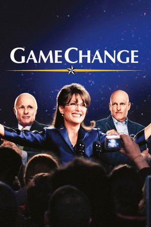
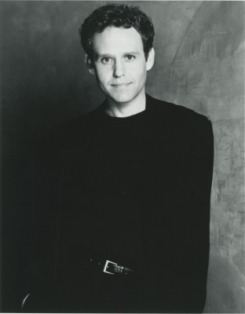

#2662 Game Change - Der Sarah-Palin-Effekt
Alternativ: Game Change
Auszeichnungen: 3 GoldenGlobes gewonnen
 
 IMDB-Wertung: 7.4 / 10
IMDB-Wertung: 7.4 / 10  Metascore: 0
Metascore: 0 
Basierend auf dem gleichnamigen Buch von John Heilemann und Mark Halperin erzählt Game Change von der Präsidentschaftskampagne von John McCain (Ed Harris) im Jahr 2008. Ihm zur Seite standen Julianne Moore als die berüchtigte Ex-Gouverneurin von Alaska Sarah Palin und Woody Harrelson als McCains Kampagnenmanager Steve Schmidt. Vielleicht hätte diese Besetzung an Stelle der Originale den Republikanern den Wahlsieg bringen können. Aber das ist eine andere Geschichte.
Jahr: 2012
Dauer: 113 Minuten
FSK:
Land: USA Studio: HBOTonspuren: DD5.1 - ,
Untertitel:
Auflösung: 1080p (1920x1080) Größe: 7536 MB
Genre: Drama, Geschichte, Biographie
Regisseur: Jay Roach
Drehbuch: Danny Strong, Mark Halperin, John Heilemann
Soundtrack: Theodore Shapiro
Darsteller:
 Julianne Moore als Sarah Palin
Julianne Moore als Sarah Palin Woody Harrelson als Steve Schmidt
Woody Harrelson als Steve Schmidt Ed Harris als John McCain
Ed Harris als John McCain-  Peter MacNicol als Rick Davis
 Jamey Sheridan als Mark Salter
Jamey Sheridan als Mark Salter Sarah Paulson als Nicolle Wallace
Sarah Paulson als Nicolle Wallace Ron Livingston als Mark Wallace
Ron Livingston als Mark Wallace Larry Sullivan als Chris Edwards
Larry Sullivan als Chris Edwards- Mikal Evans als Bexie Nobles
 Colby French als Tucker Eskew
Colby French als Tucker Eskew Bruce Altman als Fred Davis
Bruce Altman als Fred Davis Spencer Garrett als Steve Biegun
Spencer Garrett als Steve Biegun Brian Howe als Randy Scheunemann
Brian Howe als Randy Scheunemann John Rothman als A.B. Culvahouse
John Rothman als A.B. Culvahouse Austin Pendleton als Senator Joe Lieberman
Austin Pendleton als Senator Joe Lieberman- Alex Hyde-White als Lindsey Graham
 Ron Perkins als Bill McInturff
Ron Perkins als Bill McInturff- Melissa Farman als Bristol Palin
- Brittany Underwood als Willow Palin
- Beth Dixon als Alaskan Constituent
 Brian d'Arcy James als Ted Frank
Brian d'Arcy James als Ted Frank- Sandy Bainum als Cindy McCain
- Douglas Nelson als Matthew Scully
- Tiffany Thornton als Meghan McCain
- Jenna Stern als Lisa Kline - Stylist
- Shirley Rumierk als Maria Comella
- Kevin Bigley als Track Palin
- Justin Gaston als Levi Johnston
- Brenna McDonough als Phone Volunteer
- Thomas Roy als Phone Volunteer
 Christie Beran als Jeannie Etchart
Christie Beran als Jeannie Etchart- Sidney Blackmer Jr. als Gun Enthusiast Palin Supporter
- Bridget Gethins als Passionate Palin Supporter
- Rain Pryor als Angela - Makeup Artist
- Tara Garwood als Amy - Hairdresser
- Peggy J. Scott als Debate Volunteer
- Lee Ordeman als Troopergate Reporter
- Brian Neal Lucero als Hostile Crowd
- Field Blauvelt als Hostile Crowd
- Jill Redding als Elderly Woman 'Can't trust Obama'
- Angela Blake als Republican
 Ashlie Atkinson als Plump Woman , uncredited
Ashlie Atkinson als Plump Woman , uncredited- Shelley Bassett als Campaign Worker , uncredited
- Karl Bittner als Rally Attendee , uncredited
 Wolf Blitzer als Himself , archive footage, uncredited
Wolf Blitzer als Himself , archive footage, uncredited- Michael Blumenstock als Convention Staffer , uncredited
 Tina Borek als Reporter , uncredited
Tina Borek als Reporter , uncredited Jacob Browne als Convention Security , uncredited
Jacob Browne als Convention Security , uncredited Jennifer Butler als Palin supporter , uncredited
Jennifer Butler als Palin supporter , uncredited- Catherine Cahill als Campaign Staffer , uncredited
Datei: X:\2012(G-M)\Game Change - Der Sarah-Palin-Effekt (2012, FSK, 1920x1080).mkv seit 30.11.2015
Festplatte: HD 2012(A-M)
 Es gibt insgesamt 112 Filme in der Gruppe '2012(G-M)'
Es gibt insgesamt 112 Filme in der Gruppe '2012(G-M)'